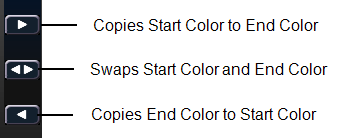

Effect Layers
The Virtual Media Server allows you to use procedurally generated content. This is content that is created algorithmically in real time, instead of rendering file based media.
In order to use procedurally generated content, you must patch the pixel map layer as a virtual effect layer instead of a virtual media layer. Setting up the pixel map is the same as for using virtual media layers. There are two versions of the effect layer, {Effect Layer Ver 1.0} and {Effect Layer Ver 1.1}.
Types of Effects

There are three main effect types:
- Two color gradients - adjustable gradients with start and end colors
- Rainbow gradients - fixed gradient, full hue spectrum
- Perlin noise - good for animating random color effects, adjustable gradients
The effects are stored in file 1. File 1:0 is a home position of no effect. 1 through 3 are perlin noise effects, 4 is a perlin noise/ rainbow gradient, 5 through 9 are rainbow gradients, and 10 through 19 are two color gradients.
Effects have various options of additional control.
Using Two Color Gradients
For the effects that use two color gradients (two color and perlin noise), there are several options for control of the gradients. The two colors are known as the start and end colors. Those options include:
- {Intensity} and {Intensity 2} - specifies the opacity of the start and end colors respectively for Virtual Effect Layer 1.0. If you want to fade a two color effect using this layer, you will need to fade both {Intensity} and {Intensity 2}.
- {Intensity 2} and {Intensity 3}- specifies the opacity of the start and end colors respectively. {Intensity} is a master opacity control for the entire layer. This is for Virtual Effect Layer 1.1. If you want to fade a two color effect using this layer, you can just fade the {Intensity}.
- {Red}, {Green}, {Blue} or {Hue} and {Saturation} - specifies the start color. You can also use the Start Color picker.
- {Red 2}, {Blue 2}, and {Green 2} - specifies the end color. You can also use the End Color picker.
- {In Point 1} and {Out Point 1} - changes the distribution of the two colors in the gradient. In Point 1 moves the start color position closer to the end color. Out Point 1 moves the end color position closer to the start color.
- {Playback Mode 1} - basic animation, forward or reverse.
- {Playback Speed 1} - speed of animation.
- {Layer Effect} - adjusts the number of repeats in the gradient. Layer Effect has a range of -100% to 100%. At the home value of 0%, one full gradient is shown. Moving toward 0%, you will see less of the gradient and moving toward 100%, you will see up to four repetitions of the gradient.
Note: The button {Layer Effect 2} is for use with perlin noise effects.
Using Rainbow Gradients
For Rainbow Gradients, the colors cannot be adjusted. But the number of repeats can be adjusted by using {Layer Effect}. {Playback Mode 1} and {Playback Speed 1} work in the same way as for two color gradients.
Using Perlin Noise
For perlin noise effects, there are different options for control:
- {Playback Mode 1} - basic animation of noise, forward or reverse.
- {Playback Speed 1} - speed of animation.
- {Layer Effect} - adjusts the amount of noise. -100% equals very little noise, and 100% equals a lot of noise.
- {Layer Effect 2} - adjusts the horizontal scrolling speed. -100% equals a fast left scroll, 0% equals no scrolling, and 100% equals a fast right scroll.
Effects Color Pickers
The effect layers have a two color pickers for selecting the start and end colors.

You can copy or swap a color between the two color pickers using the buttons located between them.
